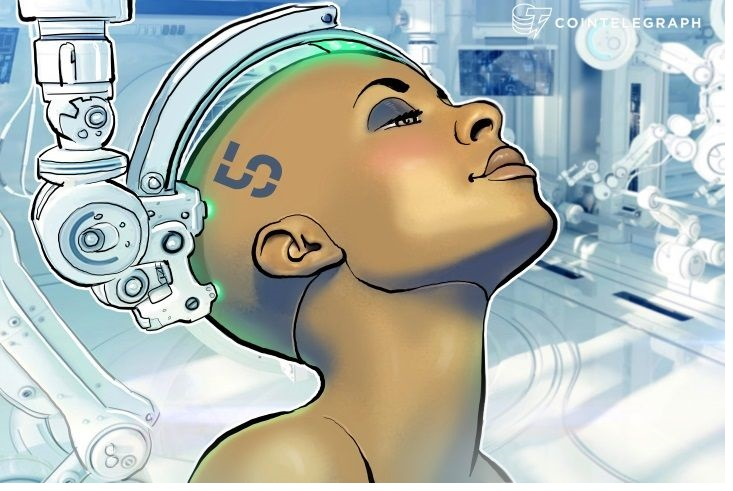

Top 4 Uses of Artificial Intelligence:
1. In the field of Medical Sciences:
The artificial intelligence has made a phenomenal impact in the medical industry and therefore changes the medical industry’s face. There have been various machine learning algorithms and models working efficiently to predict various critical use cases such as determining whether a particular patient has malignant or benign cancer or tumor based on the symptoms and the health records and history. It is also being used in future predictions where the patients are being told well about their deteriorating health and the preventions they should take to get back to a normal and healthy life. Artificial intelligence has created a virtual care private assistant who is specifically built for people’s needs and is widely used for monitoring researching different types of cases and analysing past cases and their outcomes. It also seeks to improve their models and assistant’s efficiency by predicting what could be improved and making themselves smarter. The use of healthcare bots is another efficient move taken by the medical industry to work their way up in the field of medicine which is known to provide 24/7 assistance and take up the less important work of managing appointments. This has not been possible without the intervention of these smart artificial intelligence-based machines.2. In the Field of Air Transport
One of the major systematic transport in the world is air transport and there became an urgent need to optimize the way they are operated. Here came the involvement of artificial intelligence where the machine is involved in planning the routes, along with flight landing and take-off charts. The navigation maps and taxing routes, along with a quick check of the entire cockpit panel to ensure the correct working of every component, have been performed using artificial intelligence in many aircraft. This has been delivering very promising results and therefore, is being adopted very frequently. The ultimate aim of artificial intelligence in the field of air transport is to give humans ease and a more comfortable journey.3. In the field of Banking and Financial Institutions
The artificial intelligence has been playing a significant role in managing financial transactions and also to handle numerous other activities in the bank. The banks’ day-to-day tasks such as transactional and financial operations, stock market money and their management, etc. are being worked upon by these machine learning models in a much easier and efficient way. Use cases such as those of Anti-money laundering where the suspicious financial transactions are being monitored and reported to the regulators is a classic example of the use of artificial intelligence in the banking and financial industry. Other use cases include those like credit systems analysis which are popular among credit card companies where the suspicious credit card transactions are tracked on the geographic level and based on various parameters is worked upon and resolved.4. In the Field of Gaming and Entertainment
From virtual reality games to modern games today, this is one industry where artificial intelligence has taken the biggest leap. The bots are always present to play with you, and therefore you are not required to have a second person to play. The level of personal details and the graphics are also possible due to the advent of artificial intelligence and is taking this industry on a different level. 